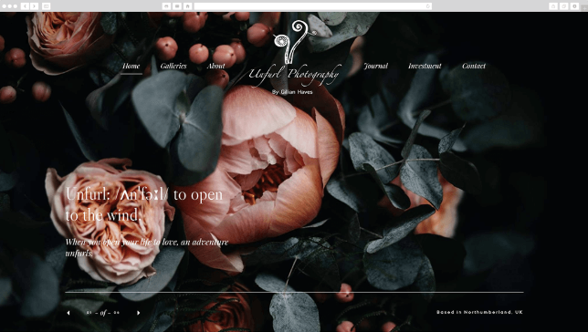

As long as you leave out other attention-stealing imagery, using a solid hero image or video background still can make a simple homepage. It allows the user to focus solely on the subject of the visual, which can have a powerful effect when done well.
http://www.johos.at

http://www.unfurlphotography.co.uk/